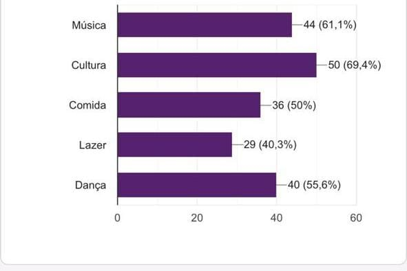

ACAMPAMENTO FARROUPILHA DE CAMBORIÚ: motivações para a participação no evento
Anny Beatriz Bezerra Fontes,Nicolly Mendonça - Eliana Quartiero, orientadora.
annyfontes703.com@gmail.com mendoncanicolly006@gmail.com eliana.quartiero@ifc.edu.br
Introdução
O evento Semana Farroupilha começou em 1947, quando um grupo denominado: "Os Oito Bombachudos“,
transportaram uma fagulha, representando o Fogo da Pátria, para Porto Alegre, onde permaneceu acesa até 20
de setembro. Esse evento marcou o início da 1ª Ronda Crioula, com o intuito de reviver e valorizar tradições
presentes na região do Rio Grande do Sul, em um período de descaracterização desta cultura.
Em Camboriú,
Santa Catarina, a Semana Farroupilha é celebrada com o objetivo de promover e preservar desta cultura,
através de atividades como música, dança, vestimenta tradicional e culinária. Como destaca Fernando Sánchez
Marcos, a celebração “[...] expressa una nueva manera de pensar y comprender la relación efectiva que un
grupo humano mantiene con el pasado, con su pasado.” (SÁNCHEZ MARCOS, 2009, p. 01), sublinhando a
importância de se conectar com e valorizar o passado cultural.
Procedimentos metodológicos
A metodologia adotada para esta pesquisa foi de natureza qualiquantitativa, para obter uma compreensão abrangente e profunda do fenômeno estudado. O objetivo principal da pesquisa foi exploratório, focando na investigação das motivações para a participação no evento. Para alcançar esse objetivo, a coleta de dados foi realizada através de uma fonte principal: um questionário no formato de Google Forms.
Resultados e discussão
Todos os dados foram obtidos a partir das respostas do formulário divulgado por meio das redes sociais, onde se obteve o total de 72 respostas.
No levantamento de dados percebemos que a grande maioria dos entrevistados relatou que a sua motivação é vivenciar esta cultura, como podemos observar no gráfico abaixo:
Considerações finais
O levantamento revelou que a maioria dos respondentes é motivada principalmente pela cultura, mas também por outros aspectos. Como um dos participantes destacou: “O que me motiva a voltar a esse evento é a oportunidade de vivenciar momentos únicos de celebração da cultura regional, assistir a apresentações artísticas incríveis, reencontrar amigos, experimentar comidas típicas deliciosas e criar memórias especiais.” A motivação para frequentar o Acampamento Farroupilha é multifacetada, incluindo a valorização da tradição, participação em atividades culturais, fortalecimento de laços comunitários e educação histórica. Esses fatores demonstram a importância do evento para a manutenção e promoção da cultura gaúcha.
Referências
Sánchez,Marcos, p. 01. Cultura e Tradição na Historiografia do Movimento Farroupilha. Rio de Janeiro, 2012